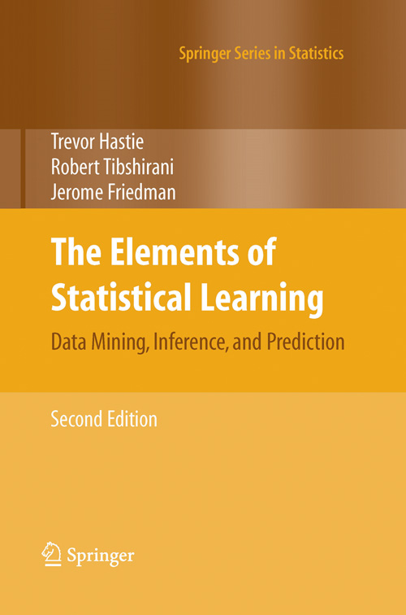

The Elements of
Statistical Learning:
Data Mining, Inference, and Prediction.
Second Edition
February 2009
Trevor Hastie
Robert Tibshirani
Jerome Friedman
What's new in the 2nd edition?
Download the book PDF (corrected 12th printing Jan 2017)
Please note: as of 2022 the references in the book to
www-stat.stanford.edu/ElemStatLearn
should be changed to
hastie.su.domains/ElemStatLearn
"... a beautiful book".
David Hand, Biometrics 2002
"An important contribution that will become a classic"
Michael Chernick, Amazon 2001